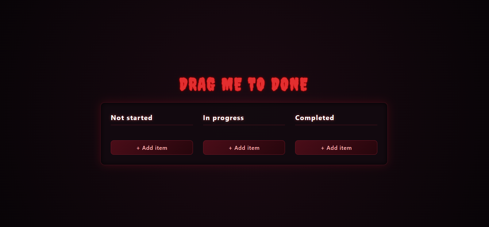
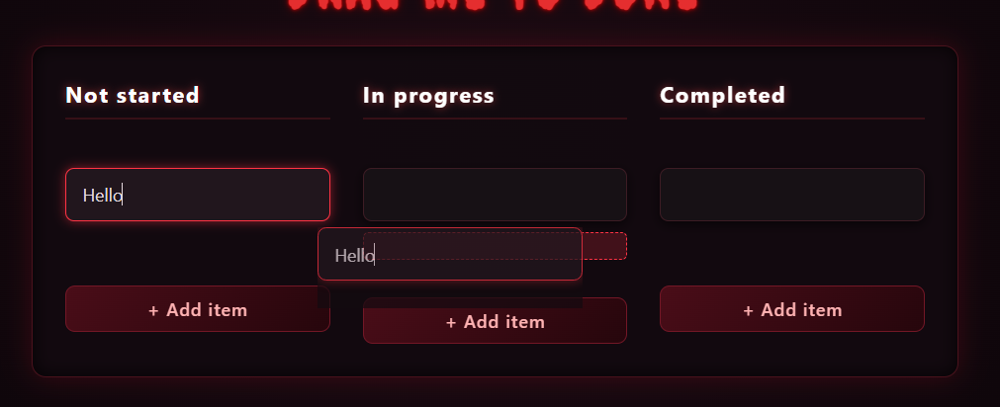
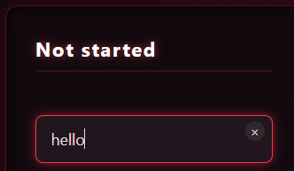
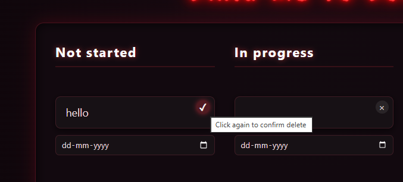
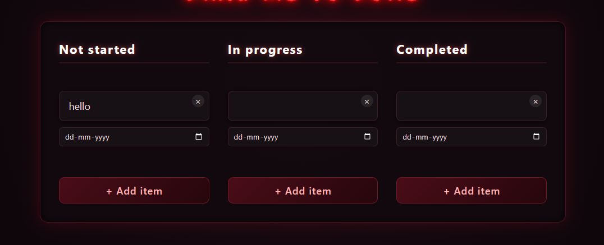

# Features:
1. Drag and Drop baased UI interface




5.Local storage also available so when you close browser or refreshes the browser it wil not gone 6. Fully Respnsive Design so it works on laptops,desktops,tablets and phones etc 7. Fully Themed UI - In this website this is horror based UI with dark and flickering Horrors how to use this perfectly 1. Clone the repo using "git clone https://github.com/JazilJafar/Dangerous-kanban-board.git" 2. This is module so index.html not fully works on browser so you do that go to terminal and say "npm serve ." or using python say "python3 -m http.server 8000" then open http://localhost:8000 in the browser also you can use live server in the VS Code license MIT - free to use and modify